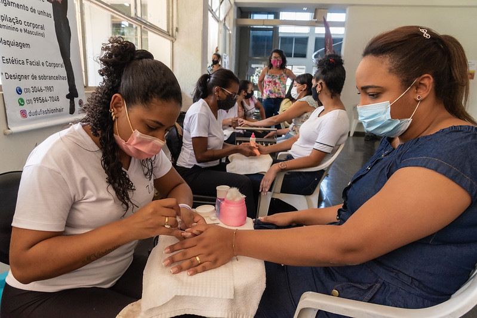

As últimas notícias da cidade em primeira mão para você.
Os servidores da Prefeitura de Contagem comemoraram nesta quinta-feira (28/10) o Dia do Servidor Público, com uma agenda cultural e de autocuidado.
As atrações culturais foram a apresentação teatral do grupo “Agente em Cena” – peça em homenagem ao servidor – e o show “Bolhas com Arte”, produzido e apresentado pela guarda civil, Elaine Macedo. O autocuidado começou logo pela manhã com a promoção de limpeza de pele e de maquiagem pelas consultoras Mary Kay. Durante toda a tarde, os funcionários também puderam cortar os cabelos, fazer as mãos e as sobrancelhas.
Além disso, mesmo diante do momento de crise econômica vivida por todo país diante da pandemia da Covid-19, nesta quinta-feira a Prefeitura de Contagem antecipou 50% do 13º salário para todos os servidores públicos de Contagem e deu o ponto facultativo do “Dia do Servidor” no dia 1º de novembro. Com a iniciativa de antecipação do 13º salário, a economia local também será fortalecida já que será injetado cerca de R$ 28 milhões na cidade.
A prefeita de Contagem, Marília Campos, participou das atividades de autocuidado promovidas pela Prefeitura. Aproveitou o momento para interagir com os servidores e cuidar das mãos e das sobrancelhas.
Segundo ela, em comemoração ao “Dia do Servidor”, além das atividades que foram promovidas, o adiantamento do 13º é uma forma de reafirmar o compromisso da administração pública com o funcionalismo. “Esta é a nossa forma de reconhecer, agradecer e parabenizar todo o funcionalismo, que tem um papel muito importante, pois é quem lida diretamente com a população. No próximo ano, vamos ampliar a política de valorização dos nossos funcionários e funcionárias, por meio da abertura de concursos públicos, de pagamento de melhores salários e melhores condições de trabalho”, frisou.
A diversidade de atrações e a escolha de temas relevantes foram apresentados durante a “Semana do Servidor” que durou quinze dias. Para a assistente administrativa da Subsecretária de Recursos Humanos, Beatriz Moreira Leite, “todos os eventos foram muito interessantes. Depois de ficarmos muito tempo em casa, trabalhando de forma remota, foi uma forma de integrar a equipe e confraternizarmos. Eu participei de várias atividades, fiz cabelo, sobrancelha e massagem, e só tenho a agradecer”, disse.
Para a assistente administrativa da Secretaria de Administração, Fabiane Queiroz Brandão, “a Prefeitura fez uma programação muito pertinente, com lazer, qualidade de vida, saúde física e mental. Os temas foram bem atuais, muito a ver com o momento que a gente está vivendo. A valorização da saúde mental fez a diferença”, opinou. Para o Guarda Civil, Gustavo Prates Ramiro, “a semana do servidor foi muito bacana, trazendo descontração para os servidores, neste momento de tanta atribulação em que vivemos. Eu achei toda a programação muito empática”, observou.
Para a subsecretária de Recursos Humanos, Érica Mendonça, “a programação contemplou as questões mais humanas, como educação, saúde e lazer, voltadas para o acolhimento das pessoas. Os eventos também aconteceram em outras secretarias para que um maior número de servidores pudesse ser beneficiado. Eu mesma participei de vários eventos e me diverti muito na aula de Ginástica do Pratica Contagem, realizada no setor de transporte. A semana foi muito positiva com muito envolvimento e participação dos servidores”, avaliou.
O evento “Semana do Servidor foi promovido pela Secretaria de Administração da Prefeitura de Contagem e pela Subsecretaria de Recursos Humanos, por meio da Escola de Governo, órgão da Sead, e da Superintendência de Gestão de Pessoas.